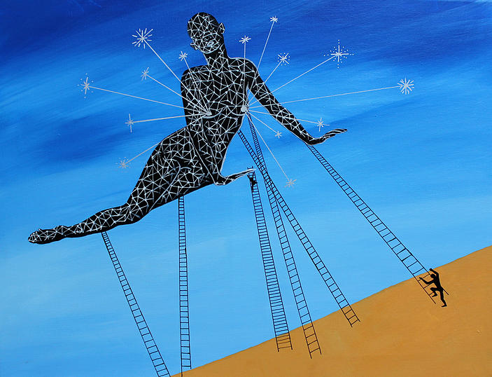
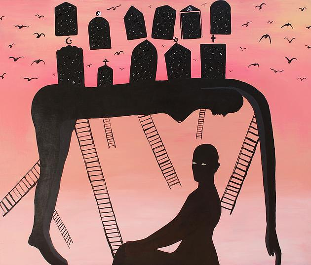

Daniela Yohannes "Painter of the Invisible"
Paris based Painter of the Invisible, Daniela Yohannes’ breathtaking work is as beautiful as it is intricate. Layered with symbolism and the complexities of human nature, her pieces walk the line of light and dark - there is a conversation between the two being had on canvas, spilling from her head to her brush. There is something haunting, yet whimsical about her art, whether it be the dark figures juxtaposed on bright and colorful backdrops, the inspiration it is derived from, or the small findings hidden within.
There is a mysticism behind her work. A dubbed sorcerer with her wand, disguised as a paint brush. Art can speak volumes, and her art has a soft rumbling to it, bursting on the brink of a scream that shouts throughout your soul begging you to question. She paints for those who cannot, and tells stories that need to be told in such a vibrant way, the paint speaks louder than words.amfm: In what way do you beg the viewer to interrogate their identity and truth? How would you say turning the page onto the viewer rather than on yourself is more impactful? In return, how do you interrogate yourself?
daniela yohannes: There is certainly an internal dialogue, which occurs before and during the process of making work. This is the primary ‘Interrogation’ with the self. And it is in this process of going inwards that you render yourself truth. That process is deeply important. It's life’s poetry. But the real poetry is that by going inwards, by searching, you force the viewer to undertake that same journey. When I paint, I’m thinking about all of humanity, and I try to suggest narratives that are deeply compelling to the human spirit.
amfm: What about the consciousness of the human condition do you find provoking? How does one being conscious of this experience rather than merely experiencing the condition elevate oneself to you?
yohannes: The fact that we have the ability to contemplate life itself is quite amazing to me. Trying to understand your nature and your place within this universe is both profound and mystifying. We essentially think, dream and ponder because we are wired that way. It is through our experiences, which are connected to our emotions, that we expose our humanity. When we overcome, evolve and, at times even transcend. It is these emotional triumphs for survival that compel me and cause me to question my truth. My method centres me. I feel and experience. From that I confront myself and contemplate and then I release via art. I'm not saying everyone should be so conscious of his or her experiences. I often think of my grandparents back home, whom I believe merely experienced life; however their connection to the source - be it God, the earth, the elements - was far greater than mine. For me they were elevated in ways I’m not. I find this to be true for certain other traditional communities of people who also live with nature. People who work the land and cultivate the food they eat. I admire those communities. A little anecdote for you - last summer I was invited to a dinner at a home of some farmers in the South of France. Everything we consumed at the dinner, they had cultivated: the vegetables, the meat, the cheese, fruits, and bread, and even the wine. Those farmers were completely self-sufficient. Now to me these people don’t need to have an ‘awareness’. They don't need to sit to contemplate life necessarily. Since they are living in direct contact with nature, they already have an innate wisdom, which stems from that. I, on the other hand, I live in a city; I go to the supermarket for food and anything I need; there is noise all around me, etc; so it’s important to me to nurture my nature. The quest for elevation begins with that consciousness. That need to find the silence among the noise.
amfm: You say you are fascinated by what you say are universal feelings, and are quite moved by them and depict or take inspiration to your work, especially through your travels and various turns of life. What piece or series either in art, time or both intertwined has held the most emotional weight or depth to you?
yohannes: There are a number of paintings, which are particularly loaded with truth and depth that are very personal to me. In no particular order, I'd like to list the following: "Ode 2180" - This is a reflection on my mortality really, which everyone can relate to. "The Kingdom" - A painting in honour of this great love I found in my husband. You know when you meet someone that you feel a deep, almost nostalgic connection to, as if you had known them from a past life or were born from the same star? I’m not the only one to have found this kind of love. This painting is about him and me in time and outside of time. "Deep End" - A triumphant painting that deals with the darkness and pain within all of us, out of which flowers can still bloom. "The Agony" - this was a way to explosively express my emotions in response to the horrors of today. I needed to make that painting. It was necessary. No question about that. "The Net" – inspired by Isaac Newton's recipe (turning base metals into gold), this painting depicts magic, mystery and hope. I believe it wasn’t so much the gold Newton was after, but God's secrets.
amfm: You say you've developed your own language when it comes to your art, can you describe that a bit further? Is this language universal?
yohannes: When I refer to language, I mean an identity. I don’t really like the term style. I come from an Illustration background having studied that at University, and what I found was that I didn’t fit in. There was a way to express yourself, which wasn’t what I was about. I did most of my learning outside the classroom though, which helped me to discover what it is that I had inside of me to share. I'll use the example of jazz. If you're a jazz musician, you listen to a lot of music and hopefully you have the opportunity to play with many players. It's not about sounding like Miles, Coltrane or Monk. It's taking all of that in and bringing something of yourself, finding your own sound. It has taken me some time to find my own voice and develop my own language, but I believe now I have.
amfm: Studio Practice and the idea of ritual is of high importance to you. How has having a ritual and having your own studio space within your home helped you delve deeper into your art and yourself to explore other realms of your work? What is sacred about this space? Outside of art, what are some other rituals you have?
yohannes: I come from an Eritrean/Ethiopian background so rituals are important for me. Back home, we do a coffee ceremony most weekends, so now that I live in France away from my family, I try and create my own ceremonies and rituals. Every day, I take part in tiny rituals, which I often invent to ease myself into working, like a dancer or athlete might stretch before a performance. In terms of my studio space - it is a pocket of silence, a haven amongst the noise, which allows me to reflect and create.
amfm: You say painting is a privilege, why do you view it that way?
yohannes: In certain respects, I see painting as a privilege. I am a woman, I am African, I am an immigrant. When I watch the news of people dying in the sea, it is very easy for me to recognize and see myself in them. They look just like me. I then have to tell myself in quiet contemplation how lucky I am to have the freedom to live and be able to paint. As challenging as creativity is, I do feel an incredible sense of peace to have a creative outlet. This is also why I often speak of it as therapy. Words have never been my forte and art allows me to project concepts that I struggle to speak about. Through my work, I also want to be a voice for those that can’t speak. This is something that weighs heavily on my heart.amfm: What is the significance of your name "painter of the invisible?" Who are the invisible?
yohannes: When I was in Bangkok (Thailand) for a residency painting for three months, I met a fellow artist. He asked if he could visit me at the studio and when he came and saw my work, he concluded that I was not a painter, but a sorcerer! After threatening to put a spell on him, he named me Painter of the Invisible. When I was in Bangkok, I felt like I was not painting alone. I had these invisible sources that would visit me and often tell me what to paint. Maybe they were me all along. But maybe not...
|  |  |
For more from Daniela Yohannes:
photo credits: daniela yohannes